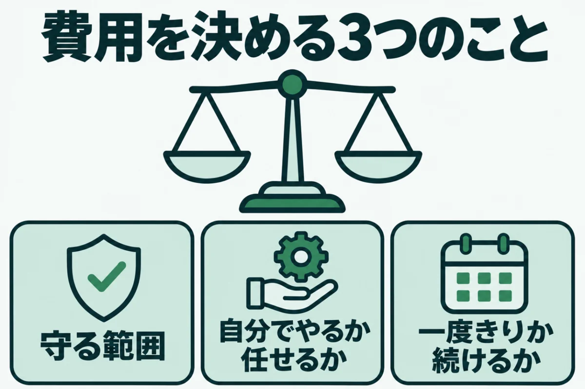
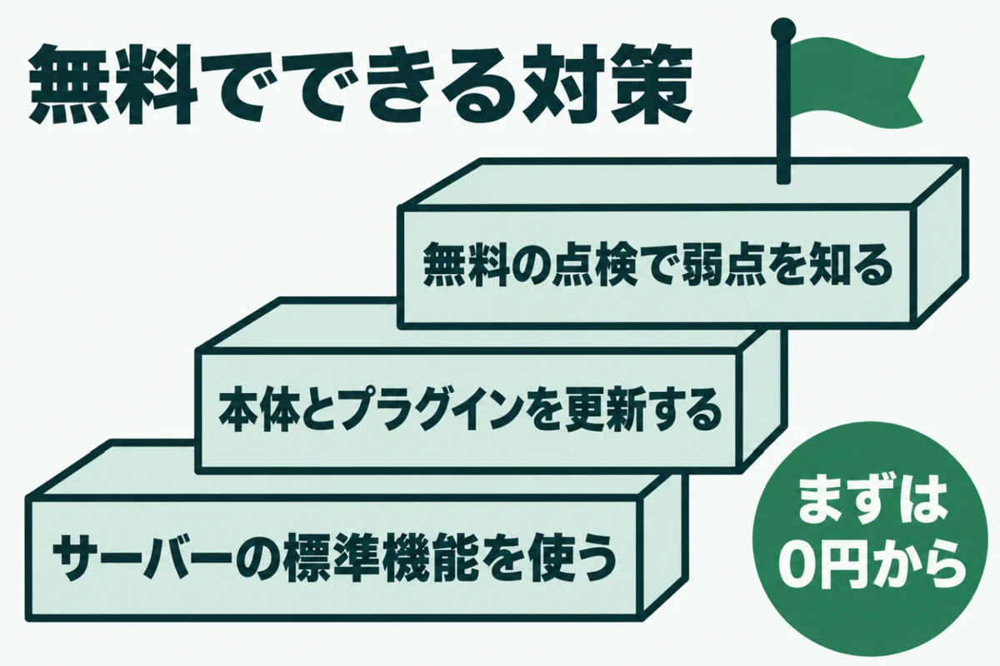
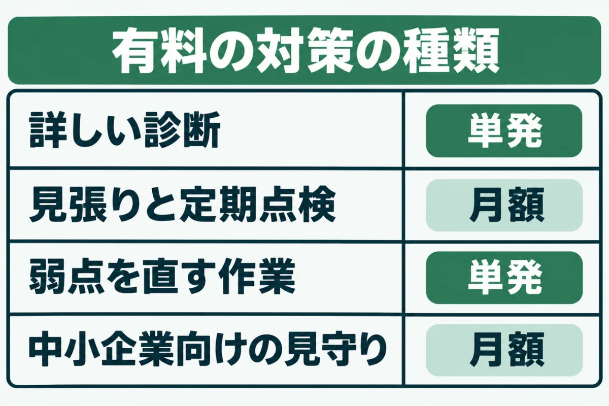
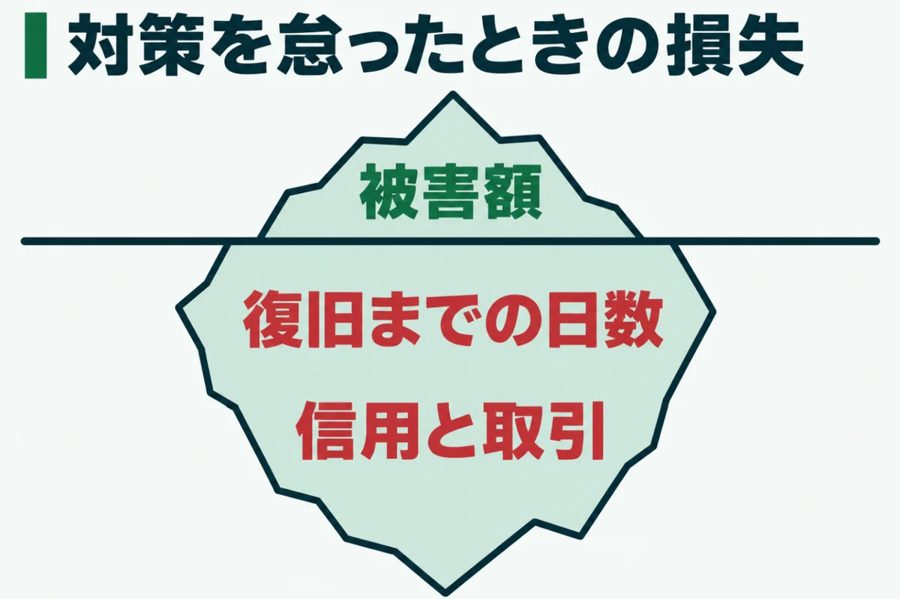
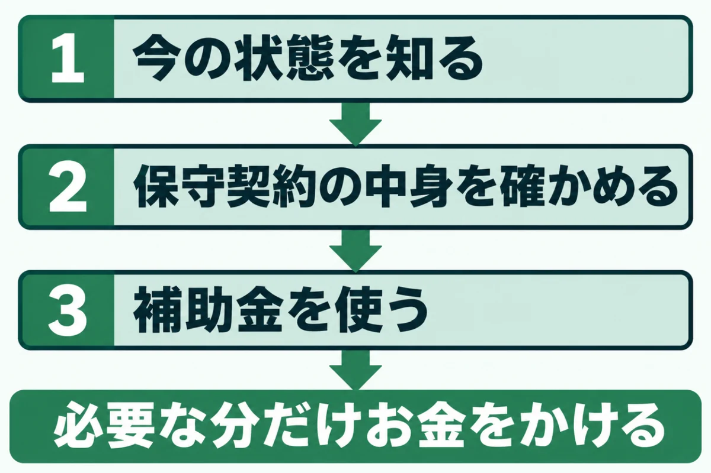

ホームページのセキュリティ対策の費用相場無料・月額・単発の目安と抑え方

「ホームページのセキュリティ対策って、いくらかければいいの？業者の見積もりが高いのか安いのか分からない」と悩んでいませんか？
セキュリティ対策の費用は、何をどこまで任せるかで大きく変わります。無料でできることもあれば、月額や単発でお金を払って任せることもあるのです。
この記事では、ホームページのセキュリティ対策にかかる費用の目安を3つに分けて整理しました。無料・月額・単発の3つです。公的機関の調査と、公的な基準に書かれた金額をもとにしています。
対策をしなかったときの損失や、補助金で費用を抑える方法も取り上げました。見積もりを比べる前の物差しとして使ってください。
ホームページのセキュリティ対策の費用を決める3つのこと

ホームページのセキュリティ対策の費用には、決まった定価がありません。見積もりの金額は、主に3つのことで決まります。
3つを先に決めておくと、見積もりを同じ条件で比べられるでしょう。金額だけで比べると、含まれる作業の違いを見落としがちです。安く見えても、点検だけで直す作業は別料金ということもあるので注意しましょう。
① 守る範囲
1つ目は、どこまでを守る対象にするかです。会社の紹介だけのサイトと、会員の情報を預かるサイトでは、守るべきものの重さが違います。
お問い合わせフォームやネットショップがあれば、個人情報の扱いも対象に入るでしょう。預かる情報が多いほど、点検と守りの範囲は広がるのです。ページの数よりも、入力や決済の仕組みがあるかどうかで費用が変わります。まずは、自分のサイトに何があるかを書き出してください。書き出した一覧は、見積もりを頼むときにも役立ちます。
② 自分でやるか任せるか
2つ目は、作業を自分でやるか、専門の業者に任せるかです。更新やバックアップを自分でできれば、その分の費用はかかりません。
ただし、自分でやる場合は、時間と知識という形の手間がかかります。担当者の時間も、目に見えない費用の1つと考えましょう。本業が忙しい会社ほど、毎月の決まった作業は任せたほうが続けやすいものです。どこまでを社内で行い、どこからを任せるかの線を引いておくと、見積もりを頼みやすくなります。
③ 一度きりか続けるか
3つ目は、一度きりの作業か、続けて見張るかです。診断や対策の作業は1回ごとの料金で、見張りや定期点検は月額になることが多くあります。
弱点は、プログラムの更新や新しい攻撃の手口で、あとから見つかるものです。一度直しても、その後の見張りがなければ元に戻るおそれがあります。最初に単発で直し、そのあとは月額で見張るという組み合わせもよく使われるのです。単発と月額は、年間でいくらになるかに直して比べてください。
無料でできるホームページのセキュリティ対策と費用

ホームページのセキュリティ対策には、費用をかけずにできるものも多くあります。お金を払う前に、まず無料の対策が済んでいるかを確かめましょう。
無料の対策が抜けたまま有料のサービスを頼むと、払った費用の効き目が下がってしまうのです。ほとんどのサイトで使える3つを紹介します。どれも今日から始められる対策です。
サーバーの標準機能を使う
多くのレンタルサーバーには、追加の料金なしで使える守りの機能がそろっています。たとえばエックスサーバーでは、WAFと無料の独自SSLを全プランで使えるのが特長です。
ところが、こうした機能はオフのままになっていることもあります。運営者のサーバーでも、最初からあるドメインのWAFが6つの項目ともオフでした。契約中のサーバーの管理画面で、オンになっているかを確かめるところから始めてください。設定の手順は次の記事で紹介しました。
エックスサーバーのWAF設定のやり方と注意点｜6つの項目と誤検知の直し方
本体とプラグインを更新する
WordPressの本体やプラグインの更新は、管理画面のボタンから無料で行えます。見つかった弱点の多くは、更新で直る仕組みです。
更新を止めたままにしていると、知られた弱点を突かれる入口が残ります。更新をこまめに当てることが、もっとも費用のかからない守りでしょう。使っていないプラグインを消しておけば、更新の手間も減らせます。更新の前にはバックアップを取り、更新のあとは表示が崩れていないかを確かめてください。
無料の点検で弱点を知る
弱点がどこにあるかは、無料の点検でもある程度分かります。IPAは、質問に答えるだけで社内の対策を確かめられる「5分でできる！情報セキュリティ自社診断」を公開しています。
ホームページなら、URLを入れるだけで外から確かめられる無料の診断も使えるでしょう。外から見える弱点は、攻撃する側にも見えているものです。無料の点検で見つかった点から直していけば、限られた費用を使う順番を決めやすくなります。結果は日付とあわせて残しておきましょう。
有料のホームページのセキュリティ対策の費用の目安

有料のホームページのセキュリティ対策は、大きく4つの種類に分かれます。業者ごとに含まれる作業が違うため、金額は中身とセットで見てください。
公的な基準で金額の上限が決まっているものもあります。金額の根拠がはっきりしているものから物差しにすると、見積もりの高い安いを判断しやすいでしょう。例として挙げるスキゼロの料金は、どれも税込みの金額です。
外からの詳しい診断
専門の業者が、サイトの弱点を詳しく調べて報告書にまとめる作業です。調べる範囲や、攻撃をまねて調べるかどうかで、費用は大きく変わります。
スキゼロの詳細診断は29,800円で、外から見える弱点と直す順番を報告書で受け取れる内容です。作り込んだシステムの弱点まで調べる診断は、見積もりで決まることが多いでしょう。何を調べて何を調べないかを、見積もりの前に確かめることが大切です。違いは、ホームページのセキュリティ診断とは？無料と有料の違いと選び方で解説しています。
月額の見張りと定期点検
弱点が新しく出ていないかを、毎月決まった間隔で確かめるサービスです。証明書の期限切れや、プログラムの古さに早く気づけます。
スキゼロの定期診断は、ライトが月4,980円、スタンダードが月19,800円です。月額のサービスは、年間の合計と、見つかったあとの対応が含まれるかで比べましょう。見張りだけで直す作業は別料金という形もあります。報告を誰が受け取り、誰が直すのかも、契約の前に決めておくと安心です。
見つかった弱点を直す作業
診断で見つかった弱点を、業者が実際に直す作業です。PHPの切り替えや、古いプラグインの入れ替え、設定の見直しなどがあります。
スキゼロの対策作業は14,800円からで、作業の量に応じて見積もりで決まる仕組みです。直す前にバックアップを取り、直したあとに表示を確かめるところまで含まれるかを見てください。作業の前後の確かめが、料金に含まれているかも比べどころです。直したあとに不具合が出たとき、元に戻す対応が含まれるかも聞いておきましょう。
中小企業向けの見守りサービス
国の基準に合った中小企業向けのサービスとして、「サイバーセキュリティお助け隊サービス」があります。相談窓口、異常の見張り、困ったときの駆けつけ、簡易な保険をまとめたものです。
IPAの基準では、ネットワークを見張る型は月額1万円（税抜き）以内とされています。パソコンを見張る型は、1台あたり月額2,000円（税抜き）以内です。会社全体の守りをまとめて任せたいときの物差しになるでしょう。ホームページの点検が含まれるかは、サービスごとに確かめてください。
ホームページのセキュリティ対策を怠ったときの費用

ホームページのセキュリティ対策の費用は、対策しなかったときの損失と比べて考えます。IPAが2024年度に4,191社へ行った調査が、その目安になるでしょう。
同じ調査では、過去3期にセキュリティ対策へ投資していない企業が62.6%に上りました。多くの企業が、費用をかけないまま被害の危険を抱えているのです。損失の中身を3つに分けて見ていきましょう。
被害額の平均は約73万円
IPAの調査の速報では、被害にあった企業の過去3期の被害額は平均で約73万円でした。最も大きい例では、1億円に上っています。
被害額には、調べる費用や直す費用、止まった売上などが含まれるのです。月額の見張りの何年分にもなる額と考えると、対策の費用の重さが変わって見えるでしょう。被害額の100万円以上も、被害にあった企業の9.4%を占めていました。小さな会社だから被害も小さい、とは限りません。対策の費用は、この額と並べて考えてください。
復旧までの日数と手間
同じ調査で、復旧までにかかった日数は平均5.8日でした。50日以上かかった企業も2.1%あり、最も長い例は360日です。
その間、ホームページからの問い合わせや注文は止まってしまいます。担当者が復旧に追われる時間も、大きな費用になるでしょう。復旧を業者に頼めば、その費用も別にかかるのです。改ざんされたサイトを元に戻す流れは、次の記事で紹介しています。
信用と取引への影響
金額に表れにくいのが、お客さまや取引先からの信用です。改ざんされたページや、危険の警告が出る画面を見た人は、二度と訪れないおそれがあります。
個人情報が漏れた場合は、本人への連絡や国への報告が必要になる場合もあるでしょう。失った信用は、お金を払っても簡単には戻らないのです。取引先から、セキュリティ対策の状況を聞かれる場面も増えています。対策の記録を残しておけば、そうした問いにも落ち着いて答えられるでしょう。
ホームページのセキュリティ対策の費用を抑える選び方

ホームページのセキュリティ対策の費用を抑えるこつは、必要なところにだけお金をかけることです。何でも任せると、使わない作業まで払うことになります。
次の3つの順で考えると、むだな出費を減らしながら守りを固められるでしょう。どれも、見積もりを頼む前にできる準備です。上から順に1つずつ確かめていきましょう。
先に今の状態を知る
最初に、今のサイトにどんな弱点があるかを知ります。弱点が分からないまま対策を頼むと、必要のない作業まで含まれがちです。
無料の診断で、古いプログラムや守りの設定の抜けを確かめておきましょう。結果を業者に見せれば、見積もりの中身を絞り込めるのです。直すべき点が少なければ、単発の作業だけで済むことも少なくありません。反対に、弱点が多ければ、月額の見張りまで考えたほうが結果として安くつく場合もあるでしょう。
保守契約の中身を確かめる
制作会社と保守契約を結んでいるなら、その中身を確かめてください。更新やバックアップが、すでに含まれていることもあります。
含まれていない作業を別の業者に頼むと、二重に払うことになりかねません。契約書の作業内容と、実際に行われている作業を見比べることが大切です。毎月の報告がなければ、何をしているかを一度聞いてみましょう。足りない部分だけを別の業者に頼めば、費用のむだを減らせます。契約の更新の時期に合わせて見直すのもよいでしょう。
補助金を使う
国の補助金で、対策の費用の一部をまかなえることがあります。デジタル化・AI導入補助金2026には、「セキュリティ対策推進枠」という申し込みの枠があるのです。
この枠では、お助け隊サービスの利用料が最大2年分、補助の対象となります。7次の締め切りは2026年12月1日の17時です。申請には、登録された支援事業者を通す決まりがあります。対象や補助率は、申請の前に公式の案内で確かめてください。締め切りの間ぎわは混み合うので、早めの準備がおすすめです。
URLを入れるだけで、古いプログラムや守りの設定の抜けなど8項目を無料で判定します。登録はいりません。
無料で診断するホームページのセキュリティ対策の費用に関するよくある質問
小さな会社のホームページでも、費用をかけて対策すべきですか？
まずは、無料でできる対策を済ませることが先です。サーバーの標準機能と更新だけでも、守りはかなり固くなります。
そのうえで、預かる情報や問い合わせの多さに合わせて、有料の対策を考えましょう。会社の大小より、サイトに何があるかで決めるのがおすすめです。迷うときは、無料の診断の結果を見てから決めても遅くありません。
保守契約に入っていれば、セキュリティ対策は済んでいますか？
保守契約の中身は、会社によって大きく違います。更新だけのものもあれば、点検や復旧まで含むものもあるのです。
契約書の作業内容を見て、更新・バックアップ・点検・復旧のどこまでが含まれるかを確かめてください。分からなければ、制作会社に一覧で聞くのが確実です。答えを文書でもらっておくと、あとで食い違いを防げるでしょう。
見積もりが高いか安いか、どう判断すればいいですか？
金額だけでなく、何を調べて何を直すのかを並べて比べます。同じ作業内容の見積もりを2〜3社から取ると、比べやすくなるでしょう。
報告書が付くか、直したあとの確かめが含まれるかも見ておきます。公的な基準の金額や、料金を公開しているサービスも物差しにしてください。安さだけで選ばず、何が含まれるかで比べることが大切です。
セキュリティ対策の費用は、経費にできますか？
事業のための支払いであれば、経費として扱うのが一般的です。ただし、扱い方は契約の形や金額によって変わることがあります。
年間の契約や、高額なシステムの導入などは、税理士に確かめると安心でしょう。補助金を使う場合も、受け取った分の扱いをあわせて聞いておいてください。領収書や契約書は、まとめて保管しておくと安心です。
補助金は、ホームページの診断にも使えますか？
セキュリティ対策推進枠の対象は、お助け隊サービスの利用料です。ホームページの単発の診断が対象になるかは、サービスによって違います。
使いたいサービスが補助の対象かは、申請の前に支援事業者や公式の案内で確かめてください。締め切りがあるので、早めに相談するのがおすすめです。補助の対象にならない部分は、別の費用として見込んでおきましょう。
まとめ
ホームページのセキュリティ対策の費用は、守る範囲、任せ方、続け方の3つで決まります。まずは、サーバーの標準機能と更新など、無料でできる対策から固めましょう。
そのうえで、今の弱点を知ってから、必要な分だけ有料の対策を選ぶのがむだのない進め方です。被害にあったときの損失や、補助金も比べて考えてください。
見積もりは、金額と中身をセットで見比べ、年間でいくらになるかで判断しましょう。
まずは、今の状態を知るところから。
URLを入れるだけで、数十秒で判定が出ます。登録はいりません。